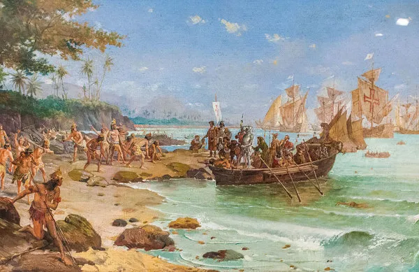

Sobre o Brasil
Página Inicial

Desembarque de Pedro Alvares Cabral
Resumo sobre a história do Brasil
A história do Brasil é dividida nos períodos: Pré-Cabralino, Pré-Colonial, Colonial, Imperial e Republicano.
Antes da chegada de Pedro Álvares Cabral, em 1500, o período Pré-Cabralino foi caracterizado pela presença dos povos indígenas no território brasileiro, marcando uma diversidade de culturas, línguas e práticas sociais
O período Pré-Colonial (1500-1530) iniciou-se com a chegada de Cabral e se estendeu até o início da colonização efetiva. Durante esse tempo, ocorreu o contato inicial entre colonizadores e indígenas, destacando-se trocas culturais, conflitos e atividades exploratórias.
Do ciclo do pau-brasil ao ciclo do ouro, o período Colonial (1500-1822) testemunhou a colonização portuguesa no Brasil, marcada por atividades extrativistas, a ascensão do açúcar e, posteriormente, a busca por ouro e diamantes.
O período Imperial (1822-1889) compreendeu o Primeiro Reinado, a Regência e o Segundo Reinado. Iniciou-se com a independência, enfrentou instabilidades políticas, como a abdicação de Dom Pedro I, e consolidou-se com Dom Pedro II, destacando-se questões sociais, como a luta pela abolição da escravidão.
A partir de 1889, a proclamação da república marcou o início do período Republicano, dividido entre a República Velha, a Era Vargas, a República Populista, o Regime Militar e a Nova República, cada fase caracterizada por eventos políticos, sociais e econômicos únicos.